⚠️⚠️⚠️
Note: The demografr R package is still under active development. As a result, its documentation is in a draft stage at best. Typos, inconsistencies, and other issues are unfortunately expected.
⚠️⚠️⚠️
This vignette contains an expanded version of the basic ABC inference example from the homepage of demografr. It walks through the process of setting up a demografr ABC pipeline step by step.
Introduction
Imagine that we sequenced genomes of individuals from populations “popA”, “popB”, “popC”, and “popD”.
Let’s also assume that we know that the three populations are phylogenetically related in the following way but we don’t know anything else (i.e., we have no idea about the values of \(N_e\), split times, or gene-flow rates):

After sequencing the genomes of individuals from these populations, we computed nucleotide diversity in these populations as well as their pairwise genetic divergence and a one \(f_4\) statistic, observing the following values of these summary statistics (which we saved in standard R data frames—perhaps saved by software we used for computing these from empirical sequence data):
- Nucleotide diversity in each population:
observed_diversity <- read.table(system.file("examples/observed_diversity.tsv", package = "demografr"), header = TRUE)
observed_diversity#> set diversity
#> 1 popA 8.030512e-05
#> 2 popB 3.288576e-05
#> 3 popC 1.013804e-04
#> 4 popD 8.910909e-05- Pairwise divergence d_X_Y between populations X and Y:
observed_divergence <- read.table(system.file("examples/observed_divergence.tsv", package = "demografr"), header = TRUE)
observed_divergence#> x y divergence
#> 1 popA popB 0.0002378613
#> 2 popA popC 0.0002375761
#> 3 popA popD 0.0002379385
#> 4 popB popC 0.0001088217
#> 5 popB popD 0.0001157056
#> 6 popC popD 0.0001100633- Value of the following \(f_4\)-statistic:
observed_f4 <- read.table(system.file("examples/observed_f4.tsv", package = "demografr"), header = TRUE)
observed_f4#> W X Y Z f4
#> 1 popA popB popC popD -3.262146e-06Now let’s develop a simple ABC pipeline which will infer the posterior distributions of two sets of parameters we are interested in: \(N_e\) of each population lineage, as well as split times between our populations of interest.
Developing an ABC pipeline
Let’s begin by loading demografr together with the R package slendr on which demografr relies on for building and simulating demographic models.
library(demografr)
library(slendr)
# we also have to activate slendr's internal environment for tree sequences
# simulation and analysis
init_env()
# setup parallelization across all CPUs
library(future)
plan(multisession, workers = availableCores())For the purpose of the ABC analysis below, we will bind all statistics in an R list, naming them appropriately. The names of each statistic (here “diversity” and “divergence”) have meaning and are quite important for later steps:
observed <- list(
diversity = observed_diversity,
divergence = observed_divergence,
f4 = observed_f4
)1. Setting up a “scaffold” model
The first step in a demografr ABC analysis is setting up a “scaffold” model—a slendr function which will return a compiled slendr model as its output, and which will accept the model parameters in form of normal R function arguments. In our simple examples, we will define the following function:
model <- function(Ne_A, Ne_B, Ne_C, Ne_D, T_AB, T_BC, T_CD, gf_BC) {
popA <- population("popA", time = 1, N = Ne_A)
popB <- population("popB", time = T_AB, N = Ne_B, parent = popA)
popC <- population("popC", time = T_BC, N = Ne_C, parent = popB)
popD <- population("popD", time = T_CD, N = Ne_D, parent = popC)
gf <- gene_flow(from = popB, to = popC, start = 9000, end = 9301, rate = gf_BC)
model <- compile_model(
populations = list(popA, popB, popC, popD), gene_flow = gf,
generation_time = 1, simulation_length = 10000,
direction = "forward", serialize = FALSE
)
samples <- schedule_sampling(
model, times = 10000,
list(popA, 25), list(popB, 25), list(popC, 25), list(popD, 25),
strict = TRUE
)
# when sampling schedule is used, both model and samples must be
# returned by the model function
return(list(model, samples))
}2. Setting up priors
We are interested in estimating the \(N_e\) of all populations and their split times. demografr makes this very easy using a familiar symbolic formula syntax in R:
priors <- list(
Ne_A ~ runif(100, 10000),
Ne_B ~ runif(100, 10000),
Ne_C ~ runif(100, 10000),
Ne_D ~ runif(100, 10000),
T_AB ~ runif(1, 4000),
T_BC ~ runif(3000, 9000),
T_CD ~ runif(5000, 10000),
gf_BC ~ runif(0, 1)
)In an ABC simulation step below, the formulas are used to draw the values of each parameter from specified distributions (in this case, all uniform distributions across a wide range of parameter values).
**For more detail into how demografr’s prior sampling formulas work (and why), take a look here.
3. Defining summary statistics
Each run of a demografr ABC simulation internally produces a tree sequence as an output. Because tree sequence represents an efficient, succint representation of the complete genealogical history of a set of samples, it is possible to compute population genetic statistics directly on the tree sequence without having to first save each simulation output to disk for computation in different software. Thanks to slendr’s library of tree-sequence functions serving as an R interface to the tskit module, you can specify summary statistics to be computed for ABC using plain and simple R code.
In our example, because we computed nucleotide diversity and pairwise
divergence in the individuals sequenced from populations “p1”, “p2”, and
“p3”, we will define the following functions. Crucially, when run on a
tree-sequence object, they will produce an output data frame in the
format analogous to the empirical statistics shown in data frames
diversity and divergence above:
compute_diversity <- function(ts) {
samples <- ts_names(ts, split = "pop")
ts_diversity(ts, sample_sets = samples)
}
compute_divergence <- function(ts) {
samples <- ts_names(ts, split = "pop")
ts_divergence(ts, sample_sets = samples)
}
compute_f4 <- function(ts) {
samples <- ts_names(ts, split = "pop")
A <- samples["popA"]; B <- samples["popB"]
C <- samples["popC"]; D <- samples["popD"]
ts_f4(ts, A, B, C, D)
}
functions <- list(
diversity = compute_diversity,
divergence = compute_divergence,
f4 = compute_f4
)Crucially, the outputs of these summary functions must match the format of the observed summary statistics (i.e., the data frames produced must have the same format). This minor inconvenience during ABC setup saves us the headache of having to match values of statistics between observed and simulated data during ABC inference itself.
Of course, having to run ABC simulations in order to check that the
summary functions have been correctly defined would be slow and
potentially costly in terms of wasted computation. To speed this process
up, demografr provides a helper function
simulate_ts() which allows you to simulate a single tree
sequence object from the specified model. You can then use that tree
sequence object to develop (and test) your summary functions before
proceeding further, like this:
ts <- simulate_ts(model, priors)With this ts object, we can, for instance, test that our
compute_f4 summary function is defined correctly (meaning
that it returns \(f_4\)` statistics
table formatted in exactly the same way as the observed table
above):
functions$f4(ts)#> # A tibble: 1 × 5
#> W X Y Z f4
#> <chr> <chr> <chr> <chr> <dbl>
#> 1 popA popB popC popD 0Looks good! (We have zero \(f_4\)
values because we didn’t specify mutation rate in
simulate_ts, as we were only interested in the
compatibility of the formats and dimensions of both simulated and
observed \(f_4\) tables). Of course, in
your analysis pipeline, you might (should!) check that all of your
summary functions are set up correctly.
4. ABC simulations
Having defined the scaffold model, a set of priors for our parameters
of interest (\(N_e\) and split times),
as well as two summary statistic functions, we can plug all this
information into the function simulate_abc().
Before we run a potentially computationally costly simulations, it is
a good idea to validate the ABC components we have so far assembled
using the function validate_abc(). This provides much
deeper correctness checks beyond the simple testing of the summary
functions as we did above.
validate_abc(model, priors, functions, observed)#> ======================================================================
#> Testing sampling of each prior parameter:
#> * Ne_A ✅
#> * Ne_B ✅
#> * Ne_C ✅
#> * Ne_D ✅
#> * T_AB ✅
#> * T_BC ✅
#> * T_CD ✅
#> * gf_BC ✅
#> ---------------------------------------------------------------------
#> The model is a slendr function
#> ---------------------------------------------------------------------
#> Checking the return statement of the model function... ✅
#> ---------------------------------------------------------------------
#> Checking the presence of required function arguments... ✅
#> ---------------------------------------------------------------------
#> Simulating tree sequence from the given model... ✅
#> ---------------------------------------------------------------------
#> Computing user-defined summary functions:
#> * diversity ✅
#> * divergence ✅
#> * f4 ✅
#> ---------------------------------------------------------------------
#> Checking the format of simulated summary statistics:
#> * diversity ✅
#> * divergence ✅
#> * f4 ✅
#> ======================================================================
#> No issues have been found in the ABC setup!Having verified that all model components are set up correctly, we
can proceed to the ABC simulations themselves, using
demografr’s function simulate_abc():
data <- simulate_abc(
model, priors, functions, observed, iterations = 10000,
sequence_length = 50e6, recombination_rate = 1e-8, mutation_rate = 1e-8
)The total runtime for the ABC simulations was 0 hours 49 minutes 45 seconds parallelized across 96 CPUs.
At this point we have generated summary statistics for simulations of models using parameters drawn from our priors. In the next step, we can finally do inference of our parameters.
5. ABC inference
Having all the information about observed and simulated data bound in
a single R object data, we can finally perform the ABC
inference. demografr includes a convenient function
run_abc() which reformats the simulated and observed data
in a format required by the R package abc and
internally calls its function abc().
Note that run_abc is just convenience wrapper around the
abc() function in the package
abc, saving us a little work juggling the necessary matrices manually. As such, all parameters of the functionabc()can be provided torun_abc()`,
which will then pass them on appropriately.
#> Warning: All parameters are "none" transformed.#> 12345678910
#> 123456789106. Posterior predictive check
Before we proceed with inferring values of the model parameters from their posterior distributions, we should check whether our model can actually produce summary statistics which match the statistics observed in the empirical data.
In order to do this, we can use demografr’s
predict() method which accepts two mandatory function
arguments: the first is the abc object generated by the
run_abc() function (and contains, among other things, the
information about the inferred posteriors), and the number of draws to
take from the multidimensional posterior distribution of the
parameters:
# because we set up a parallelization plan() above, the predictions are
# computed in parallel across all available CPUs
predictions <- predict(abc, samples = 1000)#> Warning: Please note that sampling adjusted parameters from the posterior
#> can lead to invalid models (i.e. inconsistent orders of split times or
#> nonsensical values of parameters in general). If you get an error, you
#> can either sample unadjusted parameters by setting `posterior = "unadj"`
#> or instruct the prediction function to skip invalid models by setting
#> `strict = FALSE`.#> Out of the total 152 simulations, 1000 runs resulted in an error.
#> The most likely explanation for this is that some parameter combinations
#> lead to an invalid model (such as inconsistent order of split times).If we take a closer look at the produced result, we see that it’s a
data frame object with several special columns (so-called “list
columns”). Those columns contain nested data frames with the values
of tree-sequence summary statistics computed for each combination of the
parameter values. Because this data has the same format as the output of
the function simulate_grid() (in fact, internally it
is produced by this function), see the vignette on grid simulations for more detail how
to analyse this.
In order to perform a detailed analysis of the posterior predictive
check results for individual (or all) summary statistics, you can use
the function extract_prediction(). A convenient alternative
to check the results visually is provided by the function
plot_prediction(). For instance, we can take a look at the
distributions of divergences produced from the parameter posterior like
this:
plot_prediction(predictions, "diversity")
plot_prediction(predictions, "divergence")
plot_prediction(predictions, "f4")
Nice! It appears that the posterior from our simplistic model captures the observed summary statistics (dashed vertical lines) quite well.
(To make evaluation a little bit easier, there’s an option
file = which instructs plot_prediction to save
a figure to disk instead of plotting it using a graphical device—useful
for work on remote servers!).
For more details on possible downstream validation and troubleshooting analyses, please see this vignette.
7. Posterior analysis
Extracting posterior summary tables
Now that we have the ABC output object ready and have more or less convinced ourselves that our model can capture the summary statistics we’ve chosen via posterior predictive checks, we can proceed with parameter inference.
First, we can get a data frame with summary statistics of the posterior distributions of our parameters. For instance, we can easily read the maximum a posteriori probability (MAP) of the parameters in the row labelled “Mode:”:
extract_summary(abc)#> Warning in density.default(x, weights = weights): Selecting bandwidth *not*
#> using 'weights'
#> Warning in density.default(x, weights = weights): Selecting bandwidth *not*
#> using 'weights'
#> Warning in density.default(x, weights = weights): Selecting bandwidth *not*
#> using 'weights'
#> Warning in density.default(x, weights = weights): Selecting bandwidth *not*
#> using 'weights'
#> Warning in density.default(x, weights = weights): Selecting bandwidth *not*
#> using 'weights'
#> Warning in density.default(x, weights = weights): Selecting bandwidth *not*
#> using 'weights'
#> Warning in density.default(x, weights = weights): Selecting bandwidth *not*
#> using 'weights'
#> Warning in density.default(x, weights = weights): Selecting bandwidth *not*
#> using 'weights'#> Ne_A Ne_B Ne_C Ne_D T_AB
#> Min.: 1001.957 404.2273 3415.523 -747.0074 684.3254
#> Weighted 2.5 % Perc.: 1345.018 640.9547 4711.907 1921.8398 1481.5127
#> Weighted Median: 2060.767 990.4728 7554.335 3360.1585 2061.0519
#> Weighted Mean: 2032.334 952.0859 7488.144 3290.6565 2091.2844
#> Weighted Mode: 2312.410 1026.7882 7995.273 3624.6699 2030.0274
#> Weighted 97.5 % Perc.: 2619.253 1286.9201 10091.549 4988.4912 2597.0219
#> Max.: 2834.625 1412.1827 11947.526 8229.7269 3738.1946
#> T_BC T_CD gf_BC
#> Min.: 4564.913 6102.605 -0.28016218
#> Weighted 2.5 % Perc.: 4942.478 6672.703 -0.10510515
#> Weighted Median: 5949.328 7917.680 0.11389950
#> Weighted Mean: 5867.263 7892.535 0.13304694
#> Weighted Mode: 6026.866 7968.639 0.09747498
#> Weighted 97.5 % Perc.: 6616.664 8906.090 0.39821362
#> Max.: 6938.472 9380.199 0.54002085Because large tables can get a little hard to read, it is possible to subset to only a specific type of parameter:
extract_summary(abc, param = "Ne")#> Warning in density.default(x, weights = weights): Selecting bandwidth *not*
#> using 'weights'
#> Warning in density.default(x, weights = weights): Selecting bandwidth *not*
#> using 'weights'
#> Warning in density.default(x, weights = weights): Selecting bandwidth *not*
#> using 'weights'
#> Warning in density.default(x, weights = weights): Selecting bandwidth *not*
#> using 'weights'
#> Warning in density.default(x, weights = weights): Selecting bandwidth *not*
#> using 'weights'
#> Warning in density.default(x, weights = weights): Selecting bandwidth *not*
#> using 'weights'
#> Warning in density.default(x, weights = weights): Selecting bandwidth *not*
#> using 'weights'
#> Warning in density.default(x, weights = weights): Selecting bandwidth *not*
#> using 'weights'#> Ne_A Ne_B Ne_C Ne_D
#> Min.: 1001.957 404.2273 3415.523 -747.0074
#> Weighted 2.5 % Perc.: 1345.018 640.9547 4711.907 1921.8398
#> Weighted Median: 2060.767 990.4728 7554.335 3360.1585
#> Weighted Mean: 2032.334 952.0859 7488.144 3290.6565
#> Weighted Mode: 2312.410 1026.7882 7995.273 3624.6699
#> Weighted 97.5 % Perc.: 2619.253 1286.9201 10091.549 4988.4912
#> Max.: 2834.625 1412.1827 11947.526 8229.7269
extract_summary(abc, param = "T")#> Warning in density.default(x, weights = weights): Selecting bandwidth *not*
#> using 'weights'
#> Warning in density.default(x, weights = weights): Selecting bandwidth *not*
#> using 'weights'
#> Warning in density.default(x, weights = weights): Selecting bandwidth *not*
#> using 'weights'
#> Warning in density.default(x, weights = weights): Selecting bandwidth *not*
#> using 'weights'
#> Warning in density.default(x, weights = weights): Selecting bandwidth *not*
#> using 'weights'
#> Warning in density.default(x, weights = weights): Selecting bandwidth *not*
#> using 'weights'
#> Warning in density.default(x, weights = weights): Selecting bandwidth *not*
#> using 'weights'
#> Warning in density.default(x, weights = weights): Selecting bandwidth *not*
#> using 'weights'#> T_AB T_BC T_CD
#> Min.: 684.3254 4564.913 6102.605
#> Weighted 2.5 % Perc.: 1481.5127 4942.478 6672.703
#> Weighted Median: 2061.0519 5949.328 7917.680
#> Weighted Mean: 2091.2844 5867.263 7892.535
#> Weighted Mode: 2030.0274 6026.866 7968.639
#> Weighted 97.5 % Perc.: 2597.0219 6616.664 8906.090
#> Max.: 3738.1946 6938.472 9380.199Alternatively, we can also extract the posterior summary for a single parameter like this:
extract_summary(abc, param = "Ne_D")#> Warning in density.default(x, weights = weights): Selecting bandwidth *not*
#> using 'weights'
#> Warning in density.default(x, weights = weights): Selecting bandwidth *not*
#> using 'weights'
#> Warning in density.default(x, weights = weights): Selecting bandwidth *not*
#> using 'weights'
#> Warning in density.default(x, weights = weights): Selecting bandwidth *not*
#> using 'weights'
#> Warning in density.default(x, weights = weights): Selecting bandwidth *not*
#> using 'weights'
#> Warning in density.default(x, weights = weights): Selecting bandwidth *not*
#> using 'weights'
#> Warning in density.default(x, weights = weights): Selecting bandwidth *not*
#> using 'weights'
#> Warning in density.default(x, weights = weights): Selecting bandwidth *not*
#> using 'weights'#> Ne_D
#> Min.: -747.0074
#> Weighted 2.5 % Perc.: 1921.8398
#> Weighted Median: 3360.1585
#> Weighted Mean: 3290.6565
#> Weighted Mode: 3624.6699
#> Weighted 97.5 % Perc.: 4988.4912
#> Max.: 8229.7269Visualizing posterior distributions of parameters
Because a chart is always more informative than a table, we can
easily get a visualization of our posteriors using the function
plot_posterior():
plot_posterior(abc, param = "Ne") + ggplot2::coord_cartesian(xlim = c(0, 10000))
Excellent! It looks like we got really nice and informative posterior distributions of \(N_e\) values!
Similarly, we get nice and informative posterior distributions of split times:
plot_posterior(abc, param = "T") + ggplot2::coord_cartesian(xlim = c(0, 10000))
And the same is true for the gene-flow rate:
plot_posterior(abc, param = "gf") + ggplot2::coord_cartesian(xlim = c(0, 1))
Because the internals of demografr ABC objects are
represented by standard objects created by the abc package, we
have many of the standard diagnostics functions of the abc R
package at our disposal. For instance, we can use the standard function
plot() to verify that the posterior (red line) for one of
the split times matches the prior (dashed line), suggesting that the
data we provided (nucleotide diversity and pairwise divergence) are not
sufficient statistics to capture enough information about population
divergences.
plot(abc, param = "T_BC")In contrast, we can see that there most definitely is sufficient information encoded in the summary statistics to tell us quite a bit about the \(N_e\) of our populations:
plot(abc, param = "Ne_B")
hist(abc, param = "gf")